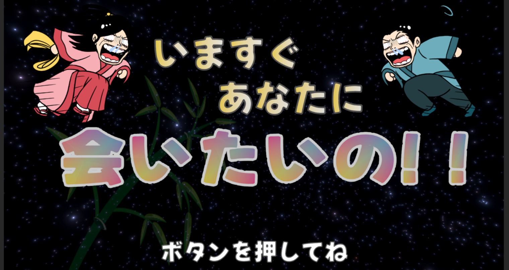

DOTweenで感情の強弱を作る
拡大、移動、フェードをSequenceでつなぎ、文章からプレイへ移るテンポを調整しました。
ARCHIVE 01 / SOLO DEVELOPMENT
心理描写とゲームシステムを融合した連打ゲーム。 焦りや必死さを、物語を読むだけでなくプレイヤーの入力として体験させました。

単なる入力回数の競争ではなく、会いたい気持ちが高まるほど手が忙しくなる構造を狙いました。
ゲームの合間にノベルパートを置き、キャラクターの状況を知った直後に連打させることで、物語と操作を交互に接続しています。
拡大、移動、フェードをSequenceでつなぎ、文章からプレイへ移るテンポを調整しました。
対戦相手の入力ペースを制御し、追いつけそうで簡単には抜けない状態を目指しました。
連打の結果を次の物語へ返し、入力がストーリー進行に関係している感覚を作りました。
WebGL版とソースコードを公開しています。